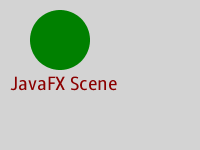

Package javafx.scene
Provides the core set of base classes for the JavaFX Scene Graph API. A scene graph is a tree-like data structure, where each item in the tree has zero or one parent and zero or more children.
The two primary classes in this package are:
Scene– Defines the scene to be rendered. It contains afillvariable that specifies the background of the scene,widthandheightvariables that specify the size of the scene, and acontentsequence that contains a list of "root"Nodesto be rendered onto the scene. This sequence ofNodesis the scene graph for thisScene. ASceneis rendered onto aStage, which is the top-level container for JavaFX content.Node– Abstract base class for all nodes in the scene graph. Each node is either a "leaf" node with no child nodes or a "branch" node with zero or more child nodes. Each node in the tree has zero or one parent. Only a single node within each tree in the scene graph will have no parent, which is often referred to as the "root" node. There may be several trees in the scene graph. Some trees may be part of aScene, in which case they are eligible to be displayed. Other trees might not be part of anyScene.
Branch nodes are of type Parent or
subclasses thereof.
Leaf nodes are classes such as
Rectangle, Text,
ImageView, MediaView,
or other such leaf classes which cannot have children.
A node may occur at most once anywhere in the scene
graph. Specifically, a node must appear no more than once in the children
list of a Parent or as the clip of a
Node.
See the Node class for more details on these restrictions.
Example
An example JavaFX scene graph is as follows:
package example;
import javafx.application.Application;
import javafx.stage.Stage;
import javafx.scene.Scene;
import javafx.scene.Group;
import javafx.scene.paint.Color;
import javafx.scene.shape.Circle;
import javafx.scene.text.Text;
import javafx.scene.text.Font;
public class Example extends Application {
@Override public void start(Stage stage) {
Group root = new Group();
Scene scene = new Scene(root, 200, 150);
scene.setFill(Color.LIGHTGRAY);
Circle circle = new Circle(60, 40, 30, Color.GREEN);
Text text = new Text(10, 90, "JavaFX Scene");
text.setFill(Color.DARKRED);
Font font = new Font(20);
text.setFont(font);
root.getChildren().add(circle);
root.getChildren().add(text);
stage.setScene(scene);
stage.show();
}
public static void main(String[] args) {
Application.launch(args);
}
}
The above example will generate the following image:

Coordinate System and Transformations
The Node class defines a traditional computer graphics "local"
coordinate system in which the x axis increases to the right and the
y axis increases downwards. The concrete node classes for shapes
provide variables for defining the geometry and location of the shape
within this local coordinate space. For example,
Rectangle provides x, y,
width, height variables while
Circle provides centerX, centerY,
and radius.
Any Node can have transformations applied to it. These include
translation, rotation, scaling, or shearing transformations. A transformation
will change the position, orientation, or size of the coordinate system as
viewed from the parent of the node that has been transformed.
See the Node class for more information on transformations.
Bounding Rectangle
Since every Node has transformations, every Node's geometric
bounding rectangle can be described differently depending on whether
transformations are accounted for or not.
Each Node has the following properties which
specifies these bounding rectangles:
boundsInLocal– specifies the bounds of theNodein untransformed local coordinates.boundsInParent– specifies the bounds of theNodeafter all transformations have been applied. It is called "boundsInParent" because the rectangle will be relative to the parent's coordinate system.layoutBounds– specifies the rectangular bounds of theNodethat should be used as the basis for layout calculations, and may differ from the visual bounds of the node. For shapes, Text, and ImageView, the defaultlayoutBoundsincludes only the shape geometry.
See the Node class for more information on bounding rectangles.
CSS
The JavaFX Scene Graph provides the facility to style nodes using
CSS (Cascading Style Sheets).
The Node class contains id, styleClass, and
style variables are used by CSS selectors to find nodes
to which styles should be applied. The Scene class contains
the stylesheets variable which is a sequence of URLs that
reference CSS style sheets that are to be applied to the nodes within
that scene.
For further information about CSS, how to apply CSS styles to nodes, and what properties are available for styling, see the CSS Reference Guide.
-
ClassDescriptionThis enum describes the actions that an assistive technology such as a screen reader can request from the scene graph.This enum describes the attributes that an assistive technology such as a screen reader can request from the scene graph.This enum describes the accessible role for a
Node.A light that illuminates an object from all directions equally regardless of its position and orientation.Cache hints for use withNode.cacheHintBase class for a camera used to render a scene.A class to encapsulate the bitmap representation of the mouse cursor.This enum defines the possible states for the depthTest flag in node.A light that illuminates an object from a specific direction.AGroupnode contains an ObservableList of children that are rendered in order whenever this node is rendered.A custom image representation of the mouse cursor.TheLightBaseclass is the base class for all objects that represent a form of light source.Base class for scene graph nodes.Specifies a parallel camera for rendering a scene without perspective correction.The base class for all nodes that have children in the scene graph.Specifies a perspective camera for rendering a scene.A light source that radiates light equally in all directions away from itself.The JavaFXSceneclass is the container for all content in a scene graph.The JavaFXSceneAntialiasingclass specifies the level of anti-aliasing desired.Parameters used to specify the rendering attributes for Node snapshot.This class holds the result of a snapshot operation.A light source that radiates light in a cone in a specific direction away from itself.TheSubSceneclass is the container for content in a scene graph.